Report on the experiments and evaluation of image classification models on the CIFAR-10 dataset
(Softmax, MLP, CNN): Batch size batch_size = 64, Optimizer SGD(lr = 0.01), Custom training loop
| Model | Detailed Architecture | Parameters (Params) | Train Accuracy (%) | Validation Accuracy (%) | Test Accuracy (%) | Time (s/epoch) |
|---|---|---|---|---|---|---|
| Softmax Classifier | Flatten → Linear(3072, 10) | 30,730 | 48.97% | 39.37% | 38.63% | 2685.59 s |
| MLP Classifier | Flatten → 4 × Hidden Layers (256-128-64-32) + ReLU | 830,250 | 86.9% | 54.72% | 55.23% | 2806.75 s |
| DeepCNN Classifier | [3 Conv + BatchNorm] => MaxPool => [3 Conv + BatchNorm] => MaxPool => [2 Conv + BatchNorm] => GAP => Linear | 1,667,146 | 99.96% | 89.46% | 88.6% | 3043.72 s |
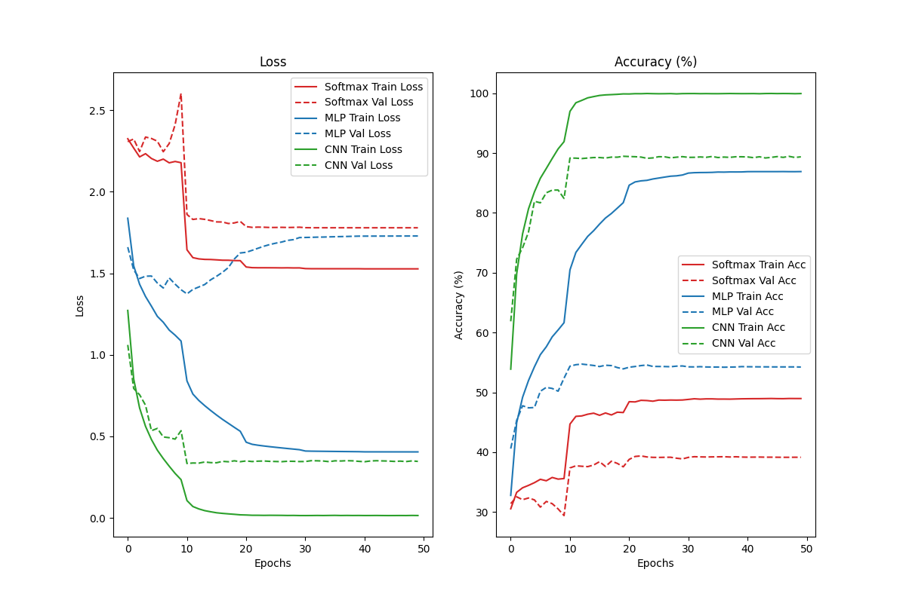
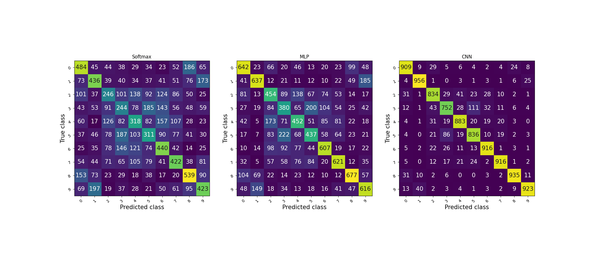
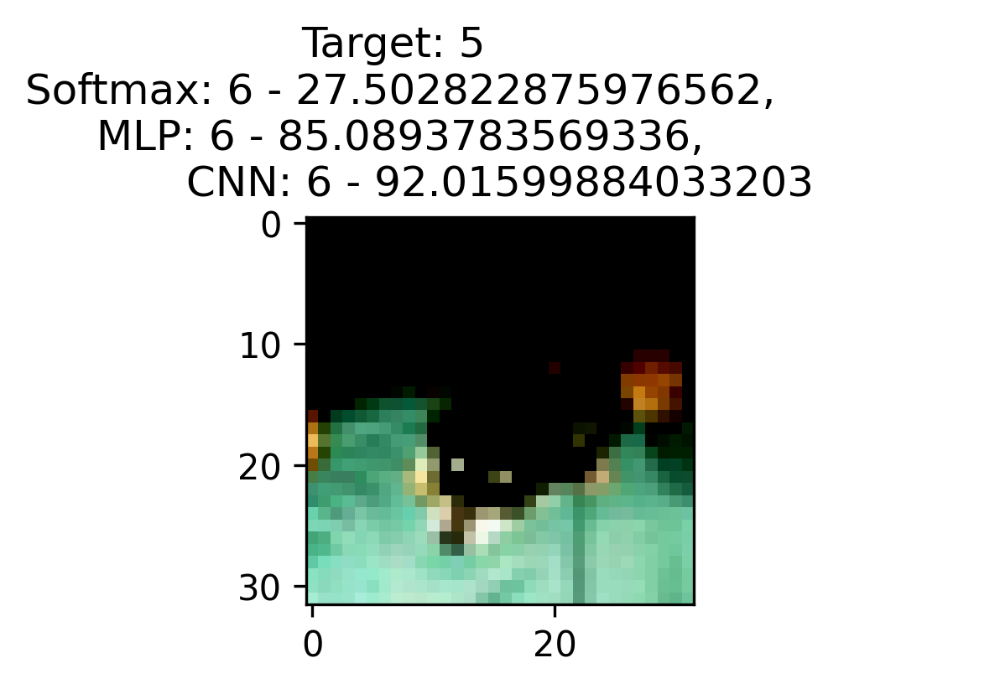
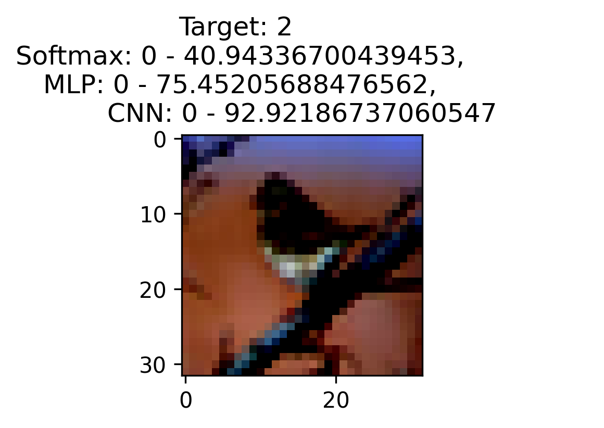
Linear, einsum / matmul, softmax, concat heads). Do not use nn.MultiheadAttention.nn.MultiheadAttention as a baseline.Patch Tokenization: Split the 32 × 32 image into grid patchesPixel Tokenization: Treat each row (32 rows = 32 steps, 96-dim vector)Row Tokenization: Treat each row (32 rows = 32 steps, 96-dim vector)CNN-stem: Reduce the feature map using a CNN, each spatial location becomes 1 token| Tokenization | Number of Tokens | Dim of Tokens | Parameter | Train Accuracy (%) | Validation Accuracy (%) | Test Accuracy (%) |
|---|---|---|---|---|---|---|
| Patch (4 × 4) | 64 | 48 | 413194 | 99.6675% | 74.22% | 70.60% |
| Pixel | 1024 | 3 | 530314 | 84.79% | 67.23% | 63.73% |
| Row | 32 | 96 | 415242 | 99.975% | 67.03% | 63.70% |
| CNN-stem | 64 | 192 | 2098772 | 100% | 88.97% | 88.50% |
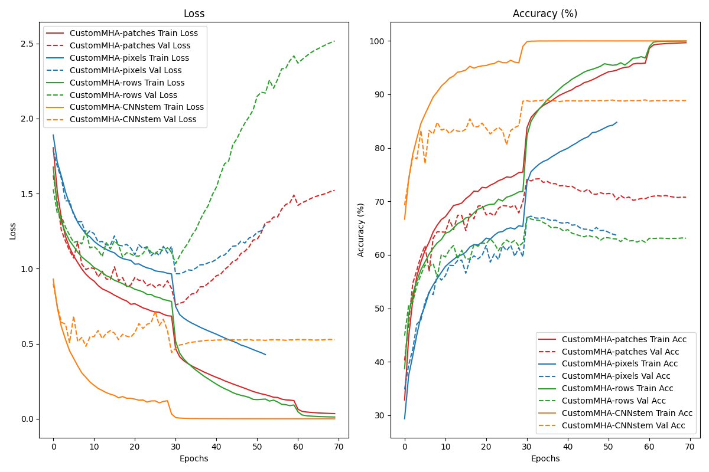
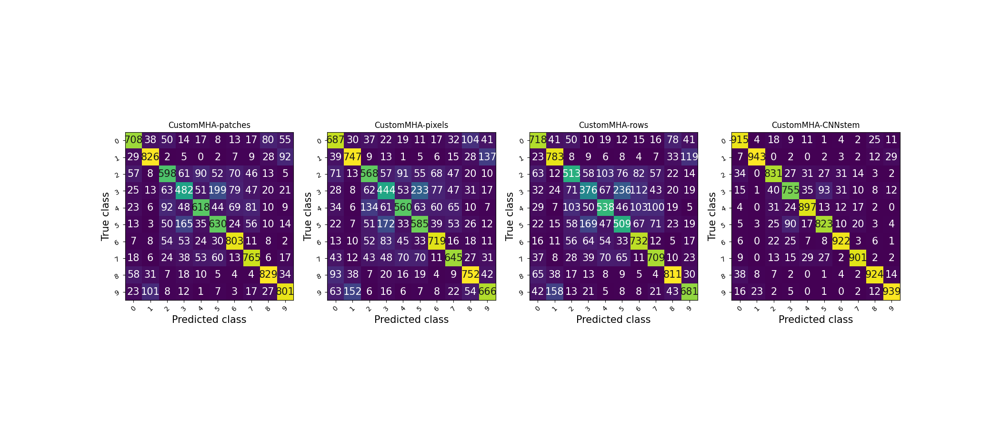
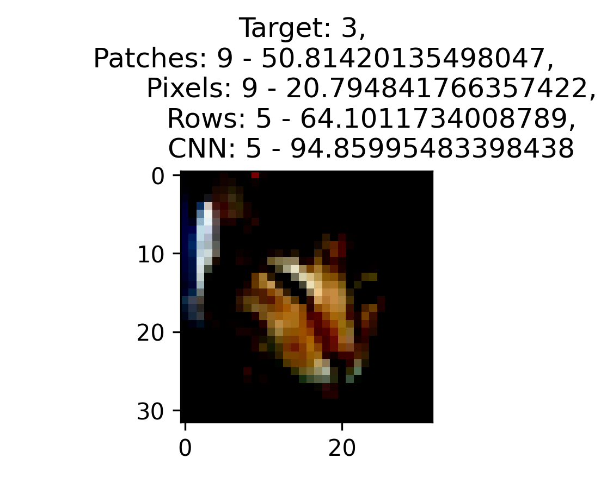
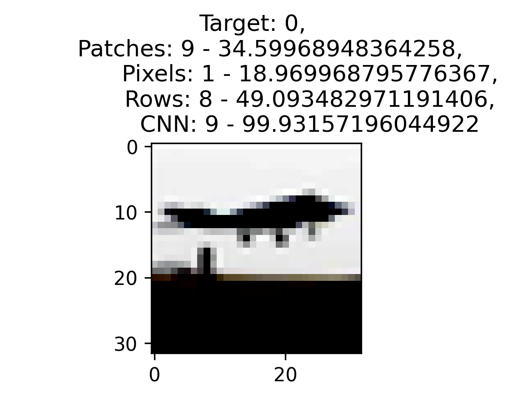
LSTM and GRU (using nn.LSTM, nn.GRU) for the CIFAR-10 image classification task.Method 1 (Patches): Patches 4*4Method 2 (Pixel): Each pixel is one tokenMethod 3 (Row-by-Row): Each row of channel is one tokenMethod 4 (CNN-stem): Each token is obtained from the output of a CNN stem applied to the image| Model | Sequence Conversion Method | Number of Parameters (Params) | Val/Test Accuracy (%) |
|---|---|---|---|
| Baseline DeepCNN (E1) | 2D Spatial Feature Map | 2098772 | 88.97% / 88.50% |
| LSTM | Row / Column (32 steps × 96-dim) | 403850 | 56.83% / 53.72% |
| Patch/Block Sequence | 409994 | 66.39% / 58.76% | |
| CNN Stem | 2089428 | 99.71% / 84.12% | |
| GRU | Row / Column (32 steps × 96-dim) | 304778 | 68.97% / 62.98% |
| Patch/Block Sequence | 310922 | 73.75% / 63.21% | |
| CNN Stem | 1990356 | 99.99% / 86.26% |
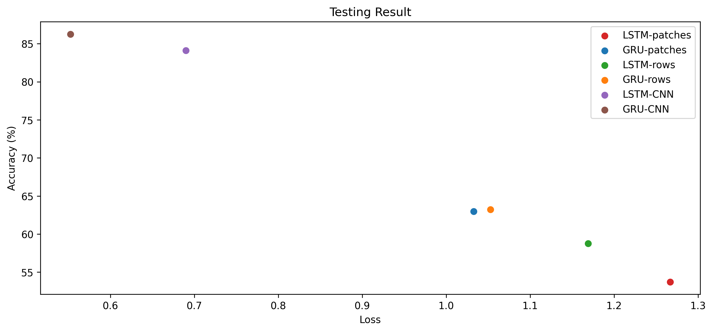
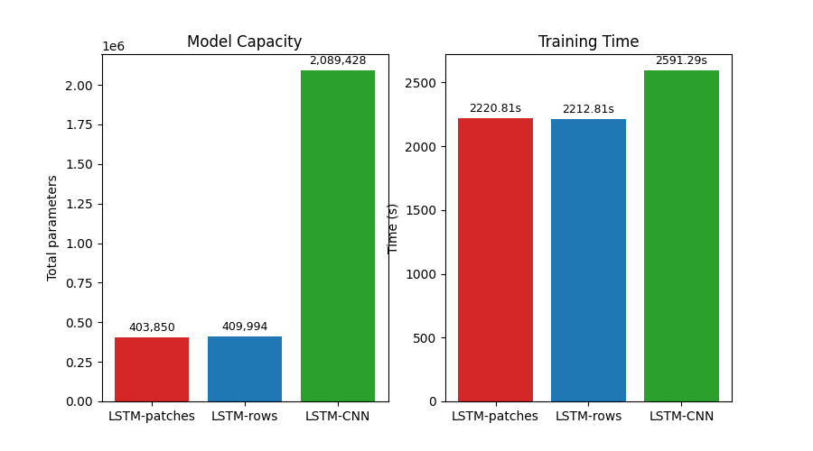
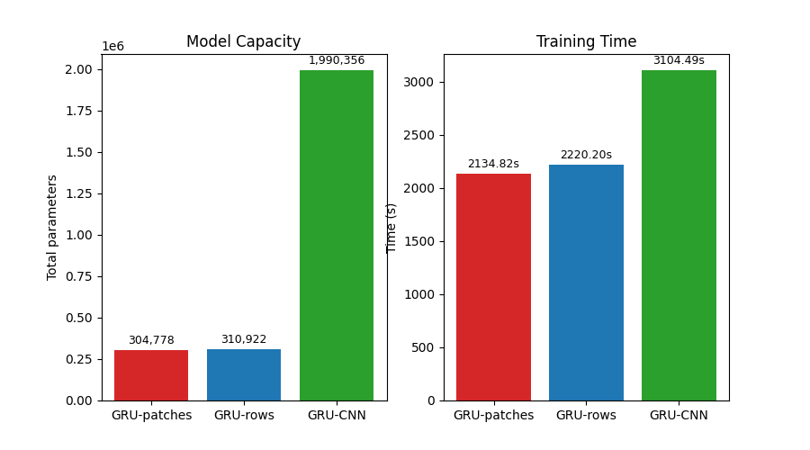
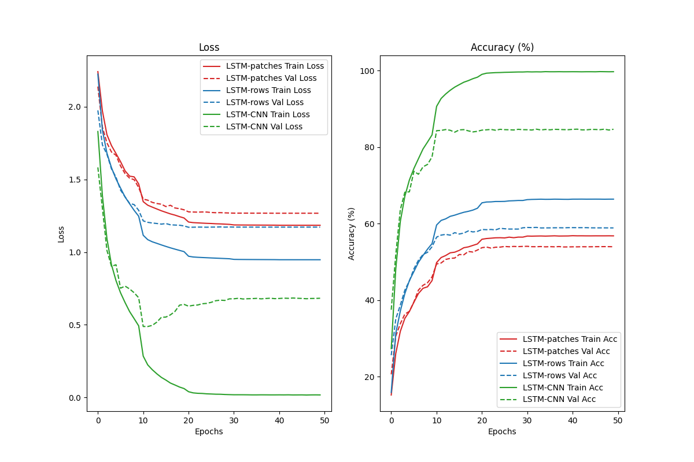
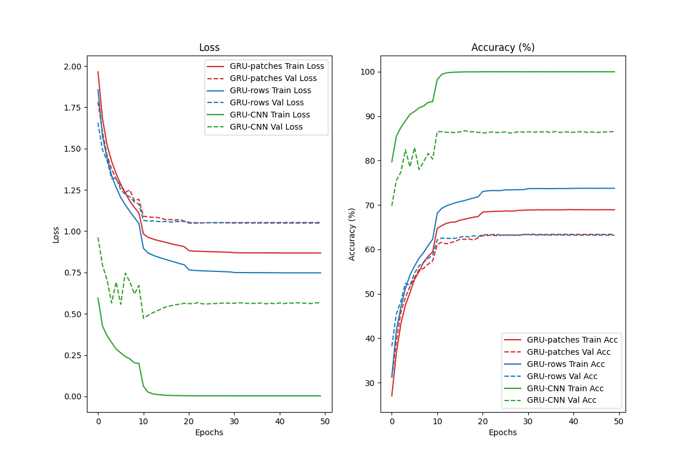
CNN-stem achieves the highest test accuracy for both LSTM (84.12%) and GRU (86.26%), significantly outperforming patch-based and row-based tokenization. GRU consistently achieves higher accuracy than LSTM across all three strategies.
GRU requires fewer trainable parameters than LSTM, with reductions of 24.53% (Patch), 24.16% (Row), and 4.74% (CNN-stem). However, CNN-stem requires approximately 2 million parameters, substantially more than the other strategies.
GRU does not consistently achieve shorter training time despite having fewer parameters. In particular, LSTM with CNN-stem trains faster (2591.30s) than GRU (3104.49s). Testing times remain relatively similar across all configurations.
CNN-stem achieves nearly 100% training accuracy, with validation accuracy of 84.67% for LSTM and 86.71% for GRU. The substantial training-validation gap suggests overfitting. Patch and Row strategies show smaller generalization gaps but considerably lower classification performance.
GRU provides higher classification accuracy and fewer trainable parameters, while LSTM offers shorter training time with CNN-stem. Overall, CNN-stem delivers the best classification performance for both recurrent architectures, highlighting the importance of spatial feature extraction before sequential processing.
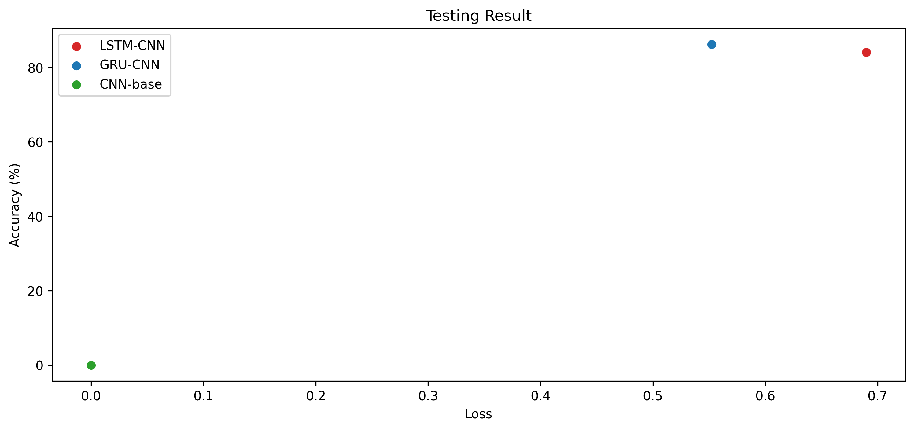
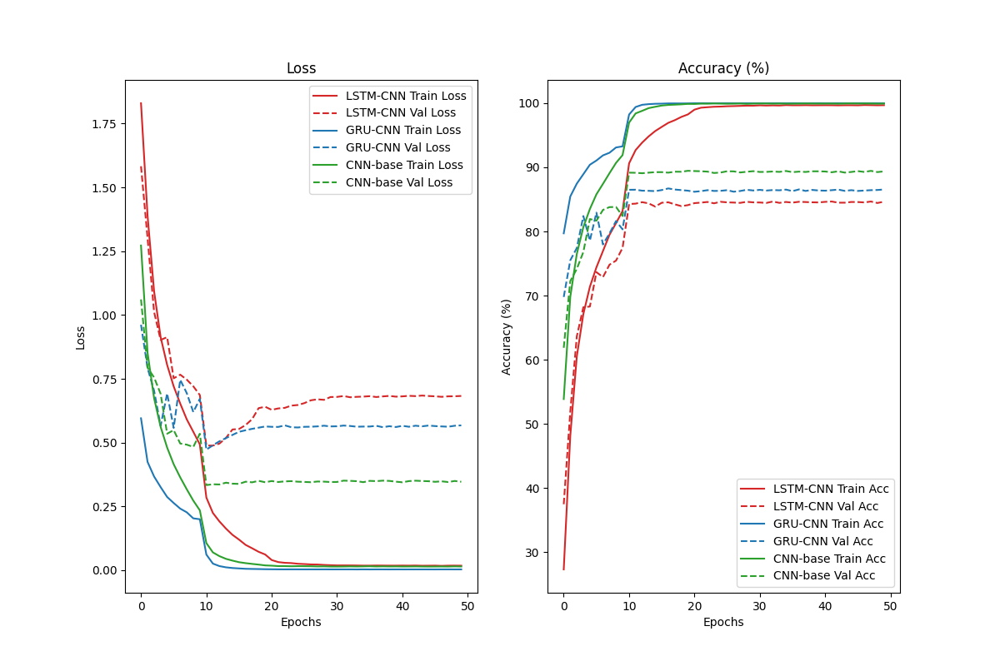
The baseline CNN achieves the best test accuracy (88.60%), outperforming CNN-stem GRU (86.26%) and LSTM (84.12%). It also provides better generalization, with the lowest test loss (0.3676) and fewer trainable parameters (1.67M). Although LSTM trains faster than the other models, neither recurrent architecture improves classification performance over the standalone CNN. This suggests that additional recurrent processing introduces complexity without providing clear benefits for CIFAR-10 classification.